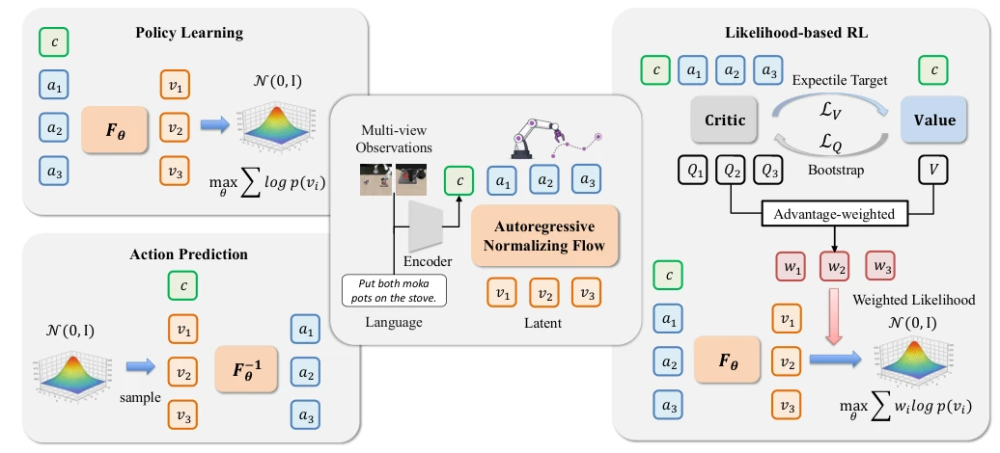
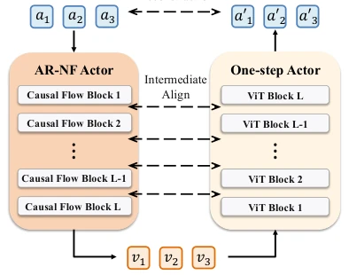
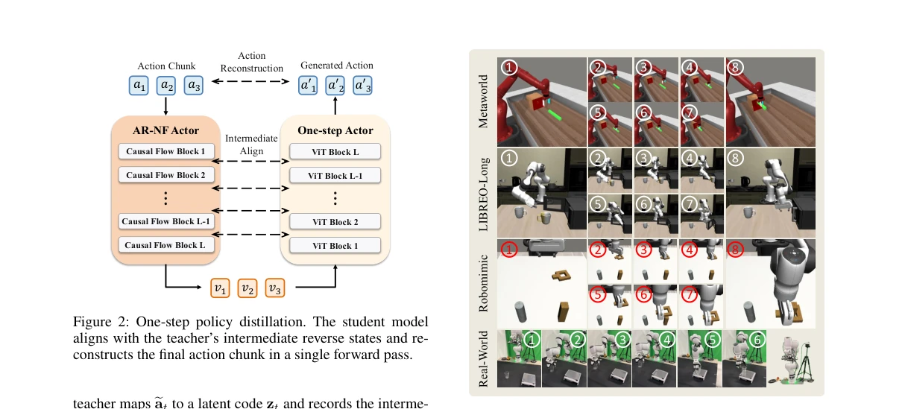
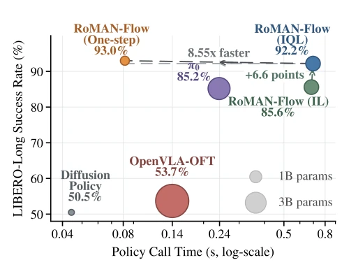
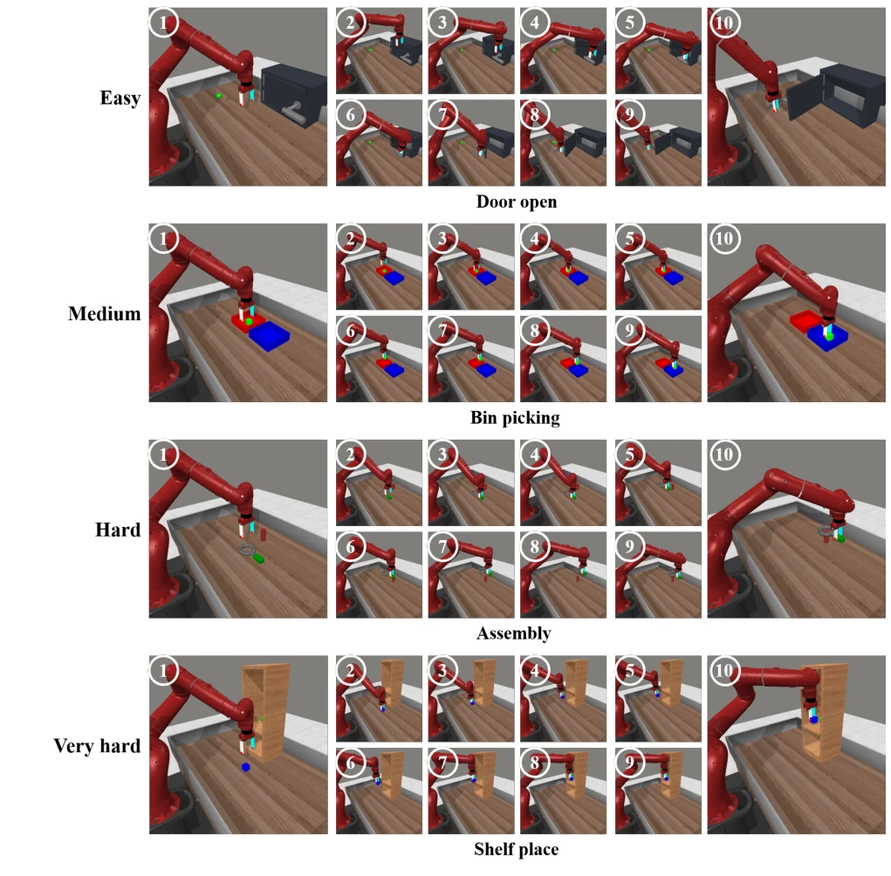
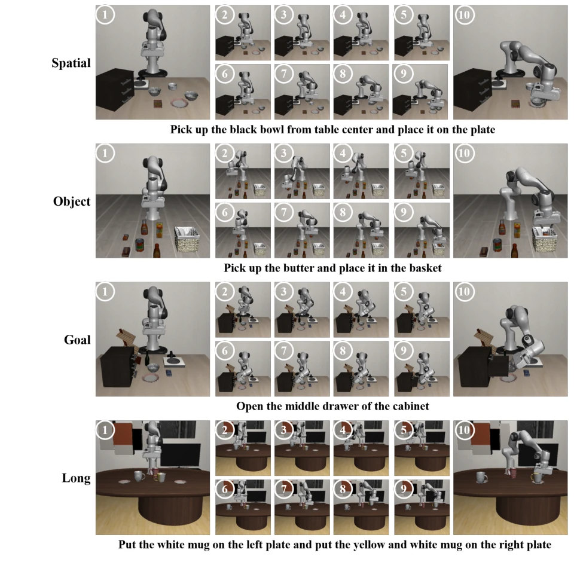
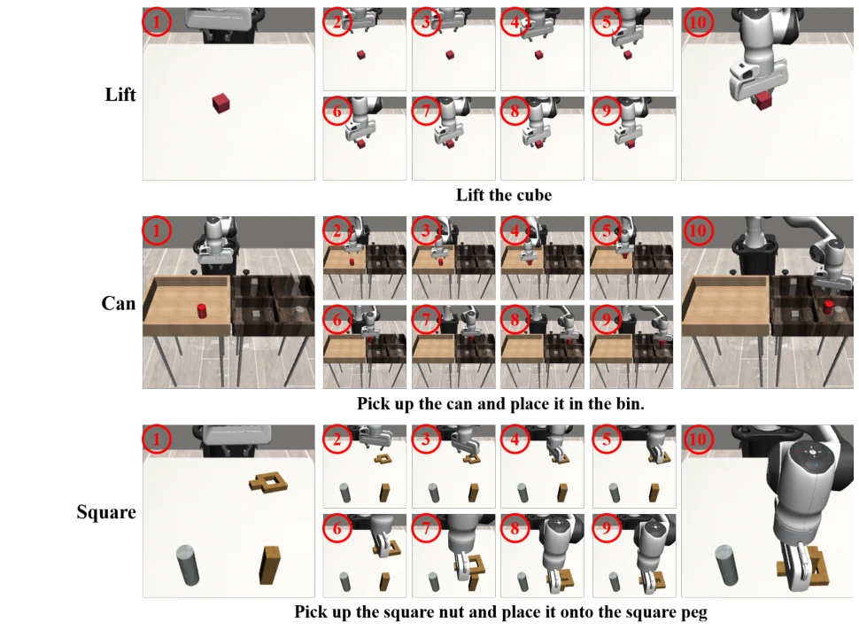

This paper attempts to integrate AR-NF, a darling of the image generation field, into robot control, focusing on "exact likelihood" RL optimization. Although AR-NF offers the benefit of computable likelihood compared to diffusion models, autoregressive sampling is exceedingly slow, making deployment nearly disastrous. The authors cleverly devised NF-IQL to avoid sampling during training, and used distillation to compress the sluggish AR-NF into one-step generation, significantly accelerating inference speed. However, distillation has long been overused in the VLA field; the core contribution of RoMAN-Flow actually lies in demonstrating that AR-NF can work in offline RL, rather than truly inventing a new algorithm. Performance-wise, it has pros and cons compared to π0, but the inference latency is indeed favorable, suitable for scenarios requiring real-time performance.
Existing robot policies are mostly based on diffusion or flow matching (Diffusion Policy, π0), but they lack low-cost exact conditional action likelihood, leading to difficulties in likelihood-based offline RL post-training. Although autoregressive models (AR) can provide exact likelihood, traditional discretization sacrifices control accuracy (Kim et al. 2024). AR-NF combines the advantages of both, but due to the autoregressive inverse process, sampling overhead is huge, severely slowing down policy optimization and deployment. This paper aims to solve the sampling bottleneck of AR-NF in robot offline RL, enabling it to possess both exact likelihood evaluation and efficient inference capabilities.
The framework is divided into three stages: first, initialize the AR-NF policy through maximum likelihood imitation learning; then conduct NF-IQL post-training, utilizing the IQL framework to calculate advantage values, but calculating weighted likelihood based only on actions in the offline dataset, avoiding autoregressive sampling during training; finally, perform one-step policy distillation, distilling the frozen AR-NF teacher network into a bidirectional Transformer student network, through intermediate flow state alignment and action reconstruction, achieving parallel generation. The core innovation lies in NF-IQL avoiding policy sampling overhead, and the distillation stage retaining the teacher network's expressive power on complex action distributions. Specifically, NF-IQL utilizes prefix-level Q-value estimation and state value baseline, assigning higher likelihood weights to high-advantage actions, without requiring current policy sampling. The distillation stage introduces prior sampling trajectories, enhancing the student network's coverage of the teacher distribution, ultimately achieving low-latency inference.

Figure 1: Overview of RoMAN-Flow. RoMAN-Flow adopts an invertible AR-NF architecture that maps continuous action chunks to latent variables conditioned on multimodal inputs. For imitation learning, it maximizes the exact conditional likelihood of demonstrated action chunks under a Gaussian latent prior. For action generation, it samples latent variables from the Gaussian prior and recovers action chunks through the autoregressive inverse transformation. For likelihood-based reinforcement learning, NF-IQL directly increases the exact likelihoods of high-advantage offline action chunks without autoregressive policy sampling.

Figure 2: One-step policy distillation. The student model aligns with the teacher’s intermediate reverse states and re- constructs the final action chunk in a single forward pass.
Tested on MetaWorld, LIBERO, RoboMimic, and real Franka platforms. Compared with baselines such as Diffusion Policy, π0, the NF-IQL stage significantly improved success rates (e.g., MetaWorld increased from 72.8% to 81.1%). After distillation, the One-Step model even surpassed the teacher network on LIBERO-Long, and inference latency dropped from 697ms to 81.5ms, speed increased by 8.55 times. Ablation experiments indicate that model capacity needs to be large enough to capture fine-grained action distributions. In real tasks, offline RL effectively improved the robustness of grasping and placement, especially performing robustly in spatial out-of-distribution extrapolation scenarios.

Figure 3: Qualitative results of RoMAN-Flow on MetaWorld, LIBERO-Long, RoboMimic, and real-world tasks. Each row shows selected frames from a rollout, while the bottom- right inset presents our real-robot platform with a seven-DoF Franka arm and a twelve-DoF XHand dexterous hand.

Figure 4: Speed–performance trade-off on LIBERO-Long with action horizon H = 16. Each point reports the average success rate and action-chunk generation latency over the ten LIBERO-Long tasks, with marker area proportional to the number of inference-time policy parameters.

Figure 5: Qualitative results of RoMAN-Flow on representative MetaWorld-MT50 manipulation tasks.

Figure 6: Qualitative rollouts of RoMAN-Flow on representative tasks from the LIBERO benchmark.

Figure 7: Qualitative rollouts of RoMAN-Flow on the Lift, Can, and Square tasks from RoboMimic MH.